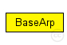
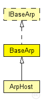

This documentation is released under the Creative Commons license
This documentation is released under the Creative Commons licenseModule which is responsible for Addressresolution
The following diagram shows usage relationships between types. Unresolved types are missing from the diagram. Click here to see the full picture.
The following diagram shows inheritance relationships for this type. Unresolved types are missing from the diagram. Click here to see the full picture.
| Name | Type | Description |
|---|---|---|
| ArpHost | simple module |
Uses host index as network and MAC address. |
| Name | Type | Default value | Description |
|---|---|---|---|
| notAffectedByHostState | bool | true | |
| coreDebug | bool | false |
debug switch for the core framework |
// Module which is responsible for Addressresolution simple BaseArp like IBaseArp { parameters: bool notAffectedByHostState = default(true); bool coreDebug = default(false); // debug switch for the core framework }
This documentation is released under the Creative Commons license